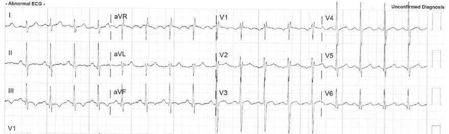
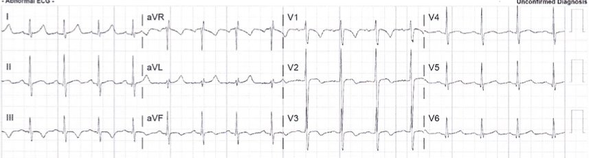

22/11/2017 — Bệnh nhân ngoài 30 tuổi đau ngực 8 giờ và troponin tăng
Bản dịch tiếng Việt của bài "A 30-something with 8 hours of chest pain and an elevated troponin" – Dr. Smith’s ECG Blog. Giữ nguyên toàn bộ 3 hình ảnh của bản gốc.
Tôi nhận được email này:
“Chào Steve,
“Tôi rất muốn biết anh nghĩ gì về các điện tâm đồ này. Chúng thuộc về một bệnh nhân 34 tuổi đau ngực (CP) liên tục x 8 giờ – bản thứ 1 lúc nhập viện, và bản thứ 2 sau đó 90 phút, sau khi troponin trả về dương tính ở mức 1.5 ng/mL.
“Ban đầu bệnh nhân có vã mồ hôi lúc 3 giờ sáng khi cơn đau bắt đầu.
“Đau không có tính chất kiểu màng phổi và không lan. Hiện đã đỡ xuống còn 3/10.
“Bệnh nhân cũng kể có đau ngực khi gắng sức x 2 tuần. Hết sau vài phút nghỉ ngơi. Không xác định được yếu tố nguy cơ tim mạch nào.”
Đây là điện tâm đồ ban đầu:


Sóng T đảo ngược ở V3; cả ở III. Blốc nhánh phải không hoàn toàn (incomplete RBBB).
Một dấu hiệu khác nữa.
Đây là điện tâm đồ lúc 90 phút, sau khi troponin trả về dương tính:


Sóng T đảo ngược ở V1-V3
Sóng T đảo ngược ở III
Đây là câu trả lời của tôi:
–Với nhịp nhanh và sóng T đảo ngược ở V1-V3 và ở chuyển đạo III, kèm đau ngực đang tiếp diễn, tôi sẽ lo ngại thuyên tắc phổi (pulmonary embolism, PE).
–Siêu âm tim tại giường: thất phải (RV)? Khám chân: huyết khối tĩnh mạch sâu (DVT)?
–Chụp CT mạch phổi (CTPA) (hoặc ít nhất là D-dimer, rồi chụp CT nếu dương tính).
–Nếu âm tính, thì cần chụp động mạch vành cấp cứu.
–Hãy cho tôi biết kết cục nhé!
(Dấu hiệu khác đó là S1Q3T3; xem bên dưới để biết ý nghĩa của nó)
Đây là lời giải đáp:
Anh nói đúng.
Cơn đau ngực khi gắng sức khiến tôi nghĩ đó là hội chứng vành cấp (ACS)/Wellens. Tôi đã siêu âm tim tại giường và nghĩ rằng vách liên thất co bóp không tốt. Tuy nhiên, nhìn lại thì nhiều khả năng đó là giãn thất phải. Bác sĩ tim mạch đã đưa bệnh nhân vào phòng thông tim (cath lab) và không có bệnh động mạch vành (CAD) (buổi chiều). Chụp CT mạch máu (CTA) cho thấy thuyên tắc phổi hình yên ngựa. Bác sĩ X quang can thiệp (IR) đã tiến hành tiêu sợi huyết qua ống thông (catheter directed thrombolysis).
Bệnh nhân chưa bao giờ kể có khó thở (SOB). Tôi cũng nghĩ rằng troponin quá cao đối với PE.
Sóng T đảo ngược (TWI) ở III có làm thiếu máu cục bộ vùng LAD trở nên ít khả năng không?
Và câu trả lời của tôi cho câu hỏi của anh ấy:
3 manh mối "tố cáo" chẩn đoán:
Trước hết, troponin dương tính xác nhận có tổn thương cơ tim, điều này giúp thu hẹp một chẩn đoán phân biệt vốn rất rộng. (Các dấu hiệu trên điện tâm đồ khá không đặc hiệu cho tới khi bạn có bằng chứng chắc chắn về tổn thương cơ tim, lúc đó ACS và PE sẽ lên đầu danh sách).
1. Đau ngực kéo dài dai dẳng kèm sóng T đảo ngược.
Wellens là một trạng thái không đau. Nghĩa là sóng T đảo ngược trong ACS có ý nghĩa khi đó là trạng thái sau thiếu máu cục bộ, sau khi đã tái tưới máu. Đó là lý do Wellens là một trạng thái không đau. Khi có đau dai dẳng kèm sóng T đảo ngược, hãy nghĩ đến các căn nguyên khác. Hơn nữa, các sóng T đảo ngược này đơn giản là trông không giống sóng Wellens (xem bên dưới).
2. Sóng T đảo ngược ở chuyển đạo III giúp phân biệt ACS với PE. Nếu chẩn đoán phân biệt là ACS hay PE và có sóng T đảo ngược ở các chuyển đạo trước tim, thì sóng T đảo ngược ở chuyển đạo III rất đặc hiệu cho PE. Xem nghiên cứu của Kosuge bên dưới.
3. Quan trọng nhất, nhịp nhanh. Nhịp nhanh xoang là bất thường trong nhồi máu cơ tim típ I.
Sóng T Wellens kinh điển, tiến triển trong 26 giờ (7 điện tâm đồ liên tiếp)
Điện tâm đồ trong thuyên tắc phổi:
Điện tâm đồ không nhạy đối với PE, nhưng khi có các dấu hiệu như S1Q3T3 hoặc sóng T đảo ngược ở thành trước, hoặc RBBB mới xuất hiện, hoặc nhịp nhanh xoang, thì chúng có tỷ số khả dĩ (+). S1Q3T3, hoặc thậm chí chỉ riêng T3, có thể giúp phân biệt Wellens với PE.
Khi troponin dương tính, thì các dấu hiệu này liên quan đến tổn thương cơ tim, và khi đó PE và nhồi máu cơ tim đứng đầu chẩn đoán phân biệt, và bài báo của Kosuge (xem bên dưới) được áp dụng.
Đây là một bài báo đáng đọc: Marchik et al. đã nghiên cứu các dấu hiệu điện tâm đồ của PE trên 6049 bệnh nhân, trong đó 354 người bị PE.
Nói cho rõ: đây đều là những bệnh nhân đang được đánh giá PE, trong khi Kosuge nghiên cứu những bệnh nhân mà chẩn đoán phân biệt chỉ còn lại ACS và PE. Chúng ta nên áp dụng dữ liệu của Kosuge cho ca bệnh ở đây vì troponin dương tính.
Họ tìm thấy các tỷ số khả dĩ dương đối với PE như sau:
1. Dấu hiệu S1Q3T3: 3.7
2. Sóng T đảo ngược ở V1 và V2, 1.8
3. Sóng T đảo ngược ở V1-V3, 2.6
4. Sóng T đảo ngược ở V1-V4, 3.7
5. Blốc nhánh phải không hoàn toàn (incomplete RBBB) 1.7
6. Nhịp nhanh, 1.8.
Cuối cùng, họ tìm thấy các yếu tố tiên đoán độc lập sau đối với PE:

Trong ca bệnh ở đây, có S1Q3T3, sóng T đảo ngược ở các chuyển đạo trước tim, blốc nhánh phải không hoàn toàn, và nhịp nhanh. Gộp tất cả lại, điều đó tạo nên một tỷ số chênh rất cao.
S1Q3T3 là gì? Rất ít nghiên cứu định nghĩa S1Q3T3. Nó đã được mô tả từ tận năm 1935 và cả S1 lẫn Q3 đều được định nghĩa là 1.5 mm (0.15 mV). Trong bài báo của Marchik, (giả sử họ định nghĩa theo cùng cách đó, và phần phương pháp không nói rõ điều này), S1Q3T3 được tìm thấy ở 8.5% bệnh nhân bị PE và 3.3% bệnh nhân không bị PE.
Kosuge et al. đã chỉ ra rằng, khi sóng T đảo ngược ở các chuyển đạo trước tim, nếu chúng cũng đảo ngược ở chuyển đạo III và V1, thì thuyên tắc phổi có khả năng cao hơn nhiều so với ACS. Trong nghiên cứu này, (trích dẫn) “sóng T âm ở các chuyển đạo III và V1 chỉ được ghi nhận ở 1% bệnh nhân ACS so với 88% bệnh nhân thuyên tắc phổi cấp (APE) (p nhỏ hơn 0.001). Độ nhạy, độ đặc hiệu, giá trị tiên đoán dương và giá trị tiên đoán âm của dấu hiệu này trong chẩn đoán PE lần lượt là 88%, 99%, 97% và 95%. Tóm lại, sự hiện diện của sóng T âm ở cả hai chuyển đạo III và V1 cho phép phân biệt PE với ACS một cách đơn giản nhưng chính xác ở những bệnh nhân có sóng T âm ở các chuyển đạo trước tim.”
Witting et al. đã khảo sát các bệnh nhân liên tiếp bị PE, ACS, hoặc không bị cả hai. Họ thấy rằng chỉ 11% ca PE có sóng T đảo ngược 1 mm ở cả chuyển đạo III và chuyển đạo V1, so với 4.6% ở nhóm chứng.
Điều này không mâu thuẫn với kết luận của Kosuge et al., những người đã nghiên cứu một quần thể chọn lọc gồm các bệnh nhân đã biết là bị PE hoặc ACS. Trong số các bệnh nhân chọn lọc đó, những người đồng thời có sóng T đảo ngược ở các chuyển đạo trước tim bên phải thì được đưa vào nghiên cứu. Trong số này, sóng T đảo ngược ở chuyển đạo III rất đặc hiệu cho PE. Theo kinh nghiệm của tôi, điều này là đúng, nhưng cần được thẩm định bằng một nghiên cứu có phương pháp tương tự. Ủng hộ Kosuge, Ferrari thấy rằng sóng T đảo ngược ở thành trước là dấu hiệu điện tâm đồ thường gặp nhất trong PE diện rộng.
Cuối cùng, Stein et al. thấy điện tâm đồ bình thường chỉ ở 3 trên 50 bệnh nhân PE diện rộng, và 9 trên 40 bệnh nhân PE dưới diện rộng (submassive). Tuy nhiên, ngày nay con số đó sẽ thấp hơn vì chúng ta chẩn đoán được nhiều ca PE dưới diện rộng có triệu chứng tối thiểu hơn.